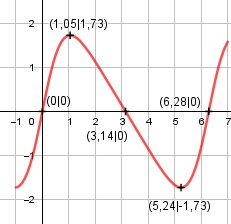

Aufgabe 180 Kurven Aufgabe 180 3 * sin x x im Bogenmaß f(x) = ------------ 2 - cos x Quotientenregel erste Ableitung: u = 3 * sin x, u' = 3 * cos x v = 2 – cos x, v' = -(-sin x) = sin x 3*cos x * (2 - cos x) - sinx*3*sin x f'(x) = -------------------------------------- (2 - cos x)2 6 * cos x - 3 cos2 x - 3 sin2 x f'(x) = ---------------------------------- 6 * cos x - 3 * (cos2 x + sin2x) f'(x) = ----------------------------------- (2 - cos x)2 6 * cos x - 3 f'(x) = ---------------- (2 - cos x)2 Quotientenregel und Kettenregel zweite Ableitung: u = 6 * cos x - 3, u' = -6 * sin x v = (2 - cos x)2, v' = 2 * (2 - cos x) * sin x v' = 2 * sin x * (2 - cos x) -6 * sin x * (2 - cos x)2 f''(x) = --------------------------- - (2 - cos x)4 2 * sin x * (2 - cos x) * (6 * cos x - 3) - --------------------------------------------- (2 - cos x)4 (2 - cos x)*[-12*sin x + 6*cos x*sinx f''(x) = --------------------------------------- - (2 - cos x)4 12*sin x*cos x + 6*sin x] - ---------------------------- (2 - cos x)4 -6 * sin x - 6 * sin x * cos x f''(x) = --------------------------------- (2 - cos x)3 -6 * sin x * (1 + cos x) f''(x) = ---------------------------- (2 - cos x)3 Zur Beurteilung, ob f'''(x) ≠ 0: u = -6 * sin x * (1 + cos x) Produktregel: u' = -6 * cos x * (1 + cos x) - - sin x * (-6 * sin x) u' = -6cos x - 6 cos2 x + 6sin2x u' f'''(x) = --- v -6 cos x - 6 cos2 x + 6 sin2 x f'''(x) = --------------------------------- (2 - cos x)3 ist ≠ 0 für alle x Definitionsbereich: 0 ≤ x ≤ 2π Symmetrie zur y-Achse bzw. zum Punkt (0|0): 3 * sin (-x) -3 * sin x f(-x) = -------------- = ------------ ≠ f(x) 2 - cos (-x) 2 - cosx --> keine Achsensymmetrie -3 * sin x 3 * sin x -f(-x) = - ------------- = ------------ = f(x) 2 – cosx 2 – cos x --> Punktsymmetrie Wertebereich: -1,73 ≤ f(x) ≤ 1,73 (siehe Extrempunkte) Nullstellen: f(x) = 0 3 * sin x ----------- = 0 |*(2 - cos x) 2 - cos x 3 * sin x = 0 |:3 sin x = 0 x1 = 0 N1(0|0) x2 = π = 3,14 ≙ 180° N2(3,14|0) x3 = 2π = 6,28 ≙ 360° N3(6,28|0) Schnittpunkt mit der y-Achse: x = 0 3 * sin 0 f(0) = ----------- = 0 2 - cos 0 Sy(0|0) Extrempunkte: f'(x) = 0 6 * cos x - 3 --------------- = 0 |*(2 - cos x)2 (2 - cos x)2 6 * cos x - 3 = 0 |+3 6 * cos x = 3 |:6 cos x = 0,5 x1 = π/3 = 1,05 ≙ 60° 3 * sin 1,05 f(1,05) = --------------- = 1,73 -cos 1,05 -6 * sin 1,05 * (cos 1,05 + 2) f''(1,05) = -------------------------------- < 0 (2 - cos 1,05)3 --> Hochpunkt(1,05|1,73) x2 = (5/3)π = 5,24 ≙ 300° 3 * sin 5,24 f(5,24) = --------------- = -1,73 2 - cos 5,24 -6 * sin 5,24 * (cos 5,24 + 2) f''(5,24) = -------------------------------- > 0 (2 - cos 5,24)3 --> Tiefpunkt(5,24|-1,73) Wendepunkte: f''(x) = 0 -6 * sin x * (cos x + 1) --------------------------- = 0 |*(2 - cos x)3 (2 - cos x)3 -6 * sin x * (cos x + 1) = 0 -6 * sin x = 0|:(-6) sin x = 0 x1 = 0 WP1(0|0) x2 = 3,14 WP2(3,14|0) x3 = 6,28 WP3(6,28|0) Graph:
